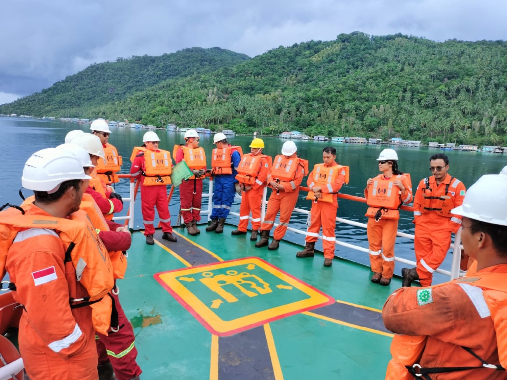
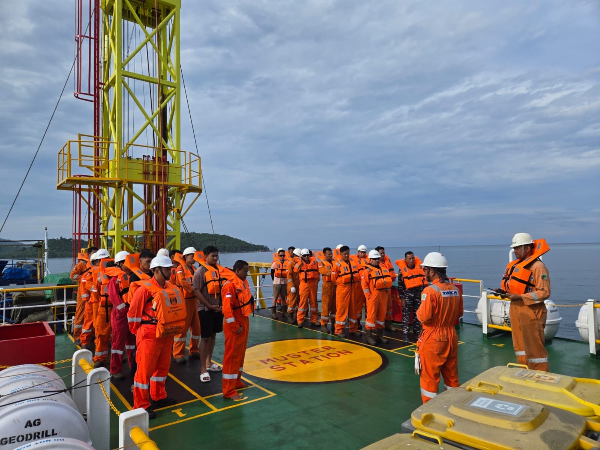
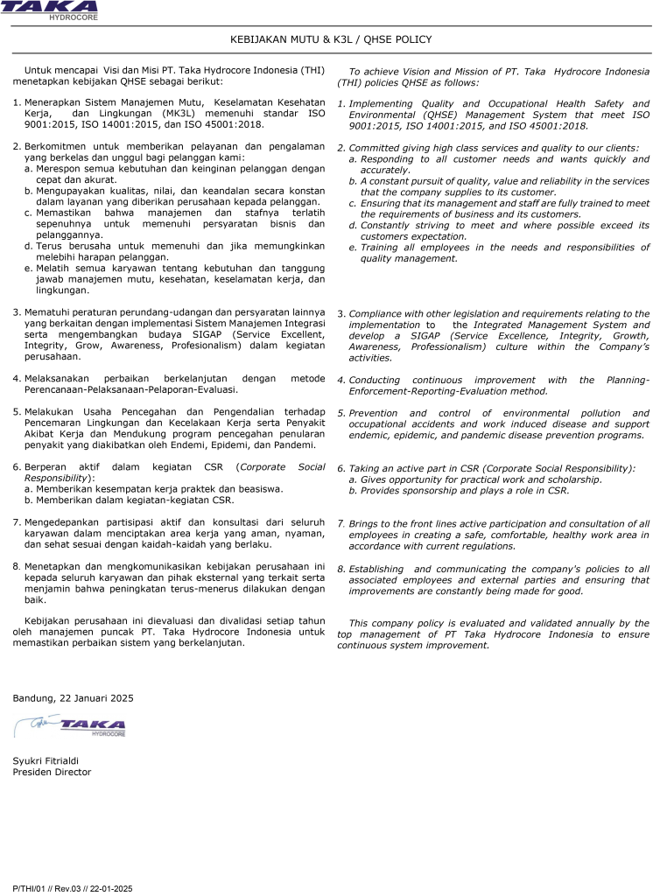
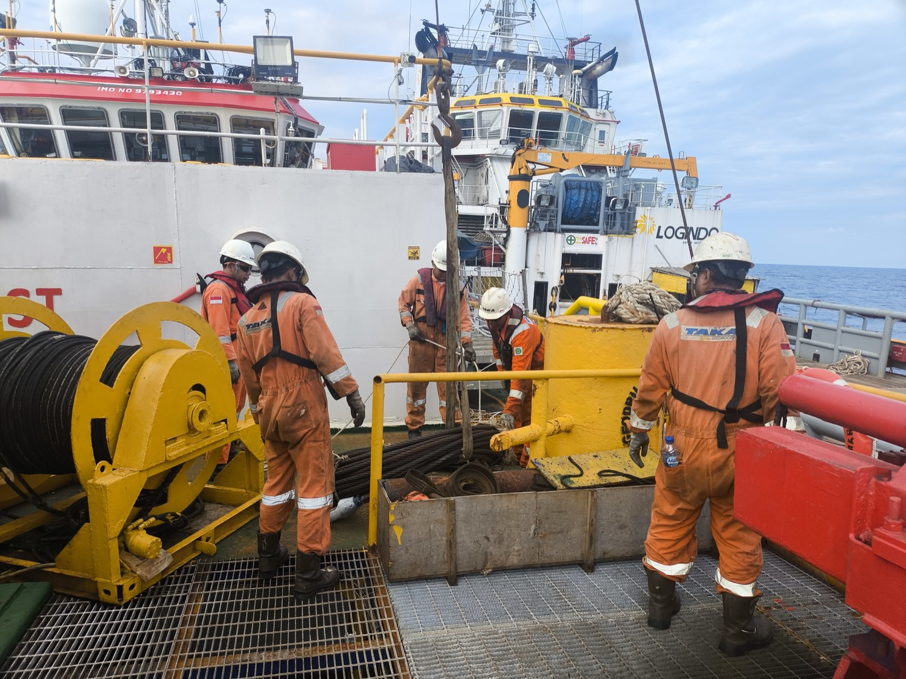

Maintained equipment
Equipment is maintained properly and periodically to keep critical field systems ready for operation.
QHSE
THI states HSE as a prime priority, supported by high HSE standards, properly maintained equipment, periodic inspection, and load testing before mobilization.
Operating commitment
THI applies and commits to high HSE standards. Equipment is maintained properly and periodically, and load tested prior to mobilization to support safe field operations.


HSE system experience
Equipment is maintained properly and periodically to keep critical field systems ready for operation.
Critical lifting and operational equipment is checked before mobilization to reduce field risk.
Site personnel have experience with HSE systems from oil companies including BP, Pertamina, CNOOC, Medco, and Santos.
CSMS, STOP card, AK3 Migas, training needs, fit-to-work personnel, and sea survival readiness are continuously maintained.
Certified management systems
THI's ISO certificates provide a formal reference for how quality, safety, and environmental controls are managed across office preparation, field operation, and reporting activity.
Supports occupational health and safety controls for personnel readiness, worksite discipline, and safer field execution.
Supports environmental management practices aligned with THI's commitment to prevent damage to the environment.
Supports consistent service delivery, documentation control, and quality assurance across survey and drilling work.
QHSE Policy
This policy document defines THI's commitment to quality management, occupational health and safety, and environmental protection across company operations and field assignments.

